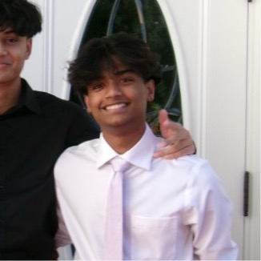

PRANAV BOLLINENI

I am a second-year Business and Data Science student at Northeastern University, interested in bridging the gap between complex algorithmic development and business value. My journey as a business-minded developer is driven by a passion for creating machine learning solutions that don't just exist in a vacuum, but solve high-stakes problems across diverse sectors like finance, healthcare, and robotics. In the financial sector, I am fascinated by the potential of predictive modeling to navigate market volatility and optimize asset allocation. My background in data science allows me to approach these problems through the lens of deep learning. Simultaneously, I explore the transformative power of AI in healthcare, where machine learning can enhance diagnostic accuracy and patient outcomes. My technical toolkit, including Python, SQL, and PyTorch, serves as the foundation for building these intelligent systems. Beyond software, I am deeply involved in the robotics space, focusing on how autonomous systems can perceive and interact with the physical world. I believe that the future of technology lies in the seamless integration of data-driven intelligence and physical hardware. Whether I am refining a transformer model or optimizing a drone's navigation path, my goal is to deliver efficient, scalable, and impactful AI solutions that drive growth and innovation in every industry I touch.